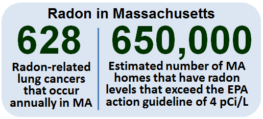
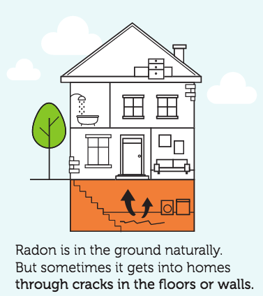
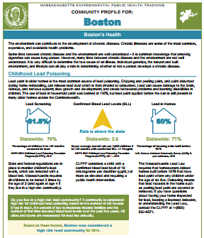

Winter 2018 - Volume 1, Issue 1
Welcome to the first edition of MassTrack, a quarterly publication of the Massachusetts Environmental Public Health Tracking (MA EPHT) program! MA EPHT tracks health and environmental information for Massachusetts and can be used to learn about the health of your community and your environment. This quarterly publication will keep you updated with news and information about MA EPHT. Our content will be tailored toward seasonally appropriate topics and tools and tips for using the EPHT website.
If you find the content of this newsletter interesting or informative, please forward to anyone who may want to receive future issues of MassTrack. Visit our Contact Us page to subscribe.
News and Updates
New mobile friendly site! In December of 2017 the MA EPHT launched a new mobile friendly site. You can now view all content and data on smartphone and tablet devices!
Data updates: New data are available for pediatric asthma and diabetes. New data will be available for birth defects, cancer, hospitalization, and outdoor air quality (modeled) in February 2018.
Featured Topic: Radon
With winter upon us, now is a good time to learn about radon and testing your home for radon.
Data Highlights

Did you know that radon is the second leading cause of lung cancer in the U.S.? The EPA estimates that over 21,000 lung cancer deaths in the U.S. each year are related to radon.
Radon gas decays into microscopic particles that can be inhaled into the lungs. Radon particles trapped in the lungs continue to breakdown, damaging the lung tissue during this decay process. This damage increases the risk of developing lung cancer. Among people who have never smoked, radon is the leading cause of lung cancer.
Radon also increases the chance of lung cancer in people that smoke. For those who are exposed to elevated indoor radon levels, people who smoke have up to 10 times the risk of developing lung cancer than people who have never smoked. MA EPHT's radon page features a radon risk table and a map of radon zones in Massachusetts.
Lifestyle Tips
Radon in Homes
Radon is a naturally occurring radioactive gas that is odorless, colorless, and tasteless. As a gas, radon can move through pathways in soil and rock formations.
How does radon enter homes?
-
through cracks and crevices in the foundation floors and walls
-
floor wall joints
-
penetrations of utility lines and sump holes
-
private water well
Once inside an enclosed space, such as a home, radon can collect. Most radon gas found in a home comes up from the ground, so the amount of radon is likely to be greater in the lowest levels of the home. Radon levels are usually higher in the winter time because, during the heating season, warm air rises and escapes. This creates a vacuum in the lowest part of the house that causes the house to draw air, including radon, from below the home. Any equipment that exhausts air or requires venting can also contribute to the vacuum effect.
Testing the air in a home is the only way to know if indoor radon levels are elevated. If you test your home in the warm weather and get a low result, it is wise to test again during the heating season. If you have a private well, you should have your water tested for radon too.
For information about testing your home for radon call the MDPH Radon Unit. The EPA also has resources online: A Citizen's Guide to Radon and the Home Buyer's and Seller's Guide to Radon. If you smoke and would like to stop, you should contact the Smoker's Helpline at 1-800-QUITNOW or visit their website.
MA EPHT Tools and Tips
EPHT and Your Community

Did you know MA EPHT provides readily available health and environmental information for all 351 communities in the Commonwealth?